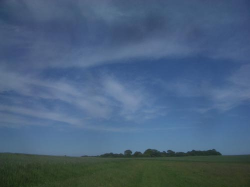
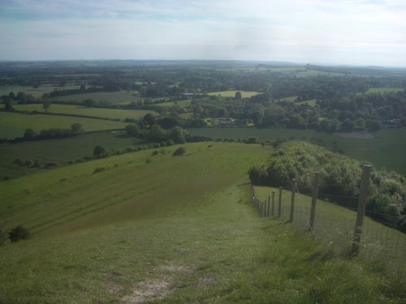
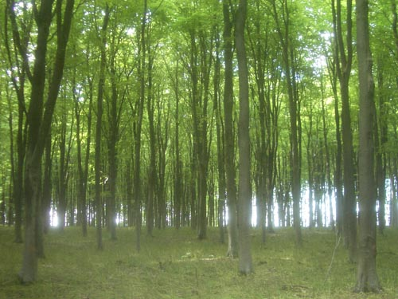
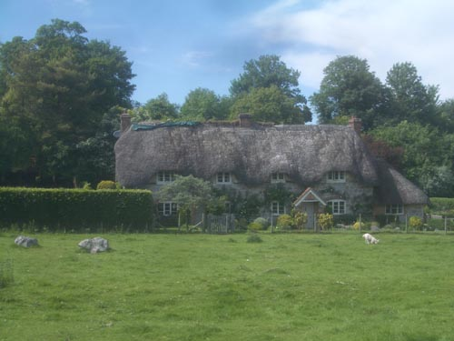

| < | > |
| eight hours there and back - a day in June | [2007-06-06 12:18] |
| Our week end was over and we told Mrs. Whitehead that we must leave. But you cannot get back to Paris now, she said. No, we answered, but we can stay in London. Oh no, she said, you must stay with us until you can get back to Paris. She was very sweet and we were very unhappy and we liked them and they liked us and we agreed to stay
The long summer wore on. It was beautiful weather and beautiful country, and Doctor Whitehead and Gertrude Stein never ceased wandering around in it and talking about all things. Gertrude Stein used to come back and tell me about these walks and the country still the same as in the days of Chaucer, with the green paths of the early britons that could still be seen in long stretches, and the triple rainbows of that strange summer. i'd been watching the weather forecast - rain of weeks - weeks of rain - patient - hunter style - for the day to walk to Lockeridge train to Pewsey - White Horse Trail - Lockeridge already in my head happily talismanic - Whiteheads - Gertrude & Alice - war interruption  a good day opens - taking it's time to close - the sky says yes - forgot and got burnt - that twittering must be a lark - two know-next-to-nothings admiring a good blue grey green - is that barley - suppose it must be - not oats not wheat - probably barley - what about millet - that's how to walk - talking  old men climb into prehistory - Martinsell Hill - some shapes confide how ancestors lived - some shapes don't photograph - wide crows glide - inverted ship prow curve - place to skin an apple  West Woods - milky floodlit forest - edge of mud tracks - map for confidence  Lockeridge - the house where the Whiteheads lived was called Sarsen Land - i know that from Bertrand Russell's address book brittle voiced lady of today - weeding her garden - had never heard of it - but you know the house at the end of the village is where Strachey wrote Eminent Victorians we thought it was this one - but were wrong |
|
|
|